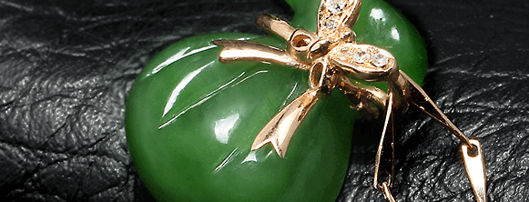
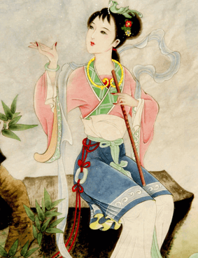

名玉古今


玉在我国的历史源远流长，素有“玉石之国”的美称，是世界上用玉最早的国家之。早在近万年前的旧石器时代晚期，中国先祖已发现并使用玉石。玉原先仅仅是一种特别性质的石头转化为代表权力、地位、财富、神权的象征。

约距今七千至四千年间的新石器时代晚期，掌祭祀大权者，用美玉制作「祭器」礼拜祖先。他们相信氏族远祖的生命，是经由神物源自上帝，便在玉器上雕饰想像中神祗祖先的形貌，甚至刻绘极具深义的符号，以礼拜之。希望藉玉器特有的质地、造形、花纹与符号，产生感应的法力，与神祗祖先交流，汲取他们的智慧，获得福庇。
西王母献玉
民间传说中的西王母子居住在远古人类的发源地喜马拉雅山脉和昆仑山脉，曾向黄帝尧舜献玉，这反映了古人类对自己故乡的怀念，对自己祖先崇拜之心的结晶。
完璧归赵
和氏璧到战国后期，被楚国用作向赵国求婚的聘礼，赠给了赵国。后来，秦统一七国，这块“和氏壁”便被秦始皇琢成世代相传的“传国玉玺”，上刻“受命子天，既寿永昌”八个篆字，成为帝王无上权力的象征。

弄玉吹箫
弄玉是古代神化传说中的神仙佳人，据说是秦穆公的女儿，生时正好有人拿来一块碧色美玉，一周岁生日时，宫中摆了很多珍珠宝石，其女独抓此玉，弄玩不舍，因起名为弄玉。。穆公宠爱此女，特为她修筑“凤楼”，楼前建有高台，名“凤台”。随后穆公欲为其女寻求佳婿，而引出了吹箫引凤，弄玉成亲，乘龙快婿的典故。
女娲补天
相传远古之时，天柱倾塌，九州崩裂，大火燃烧，洪水汪洋不息，民不聊生，女娲炼以五色石补苍天，挽救了众生，又将补天石多余之石散后落在大地，“千样玛瑙万种玉”由此而来。这个神化将玉说成补天之物，可见我们民族对玉有着特殊的喜好。